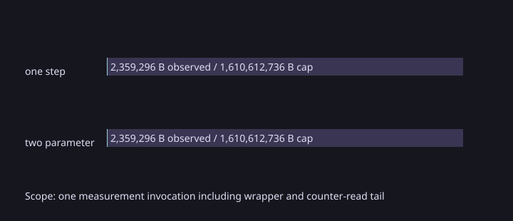

Capability and observed resources
Both invocations requested and enforced a 300-second watchdog, 1.5 GiB memory cap, zero swap, and one CPU quota. Resource counters cover the executable process tree, including a shell wrapper and a short idle tail for reading live cgroup counters; they do not attribute cost to individual transitions. Build, smoke, and rendering are excluded.

| Profile | Horizon | Modes | Edges | Paths | Free controls | Joint variables | Measured calls | Batch time median (range) | Peak memory | CPU cgroup time | Swap peak | Memory cap | Wall cap | CPU quota |
|---|---|---|---|---|---|---|---|---|---|---|---|---|---|---|
| one_step | 1 | 2 | 1 | 1 | 1 | 4 | 140 | 5,529,239 ns (5,317,688–5,959,674) | 2,359,296 B | 62,144,000 ns | 0 B | 1,610,612,736 B | 300 s | 100% |
| two_parameter | 2 | 3 | 3 | 2 | 2 | 7 | 140 | 66,139,469 ns (65,842,500–66,461,928) | 2,359,296 B | 519,431,000 ns | 0 B | 1,610,612,736 B | 300 s | 100% |
The end-to-end rows are descriptive single-fixture timings, not cross-profile comparisons or evidence of a solver ranking. The two profiles differ in horizon, path count and relation size.
Numerical evidence
All seven measured batches per profile completed with zero failures (140 calls each). Both used csl.lp.highs@1.1.0+highs.1.11.0. The one-step verifier established feasibility, optimality and complete scalar-family coverage. The two-parameter capture used the exact-linear-H verifier and established those properties on both tied edge paths. These are numerical binary64 checks, not validated arithmetic.
The companion result reports are ext07-hybrid-51d9ee2e89d240eb (one-step) and ext07-hybrid-two-parameter-8ad871b5ea29fc7b (two-parameter); this record focuses on their separate Linux resource captures.
Reproducibility and limits
The measured build used GNU 16.2.1 / Unix Makefiles / Linux-7.2.8-9-omarchy-x86_64-with-glibc2.44. Each source commit, source tree, measured driver, compiler receipt, redacted build configuration, saved smoke and resource-limited measurement rows, systemd limits, and cgroup observations are included. The build-configuration file records the SHA-256 of the original cache, while local paths from that cache and the build logs are omitted. Exact source commits are one-step and two-parameter. The captures make no general scalability, performance comparison or per-transition resource claim.